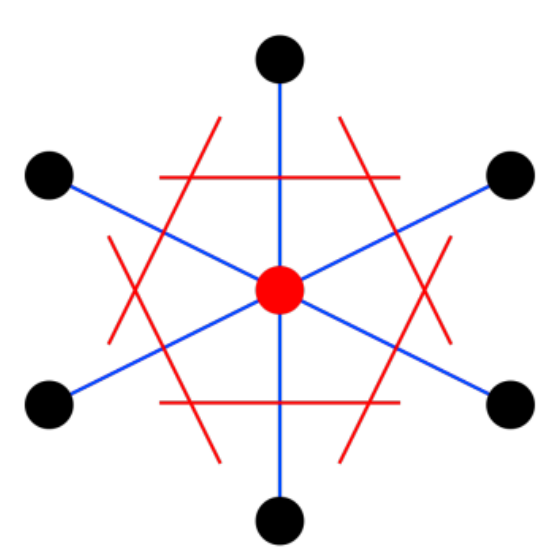
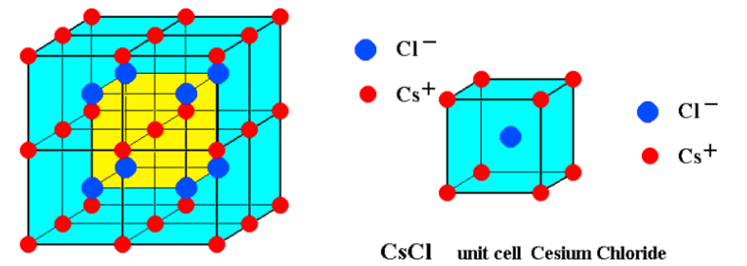

固体物理整理*
适合 IAS 宝宝的简单讲义，适合懂了一些后回顾补全
尝试在期中之前完成考试内容整理
课叫固体物理，其实改名晶体与电子的共舞完全可行 ;)（）。物理研究要对固体建模，首先基于前人经验，我们采用一个方便的网格来组成物质的骨架，符合这种模型的物质就分类为1——
晶体
晶体具有周期性，可以用 基元 放到 格点 (lattice site) 的网络上表达2，所有格点就是 布拉伐格子 。格点要保持间隙，使用坐标系会方便，故在空间中使用 基矢 表达方向3。
Bravais 格⼦的两个等价定义：
第⼀个定义：等价的⼏何点集合(可以⽤来判断⼀个图形是否是 Bravais 格⼦) 第⼆个定义：由⽮量 𝑹𝑛 = 𝑛1 𝒂1 + 𝑛2 𝒂2 + 𝑛3 𝒂3 代表的所有点的集合，其中 𝑛1,𝑛2, 𝑛3 为整数

Figure 1: 绿、蓝是晶胞：每个 cell ⾥有两个格点；红⾊是原胞：最⼩的重复单元；蓝为惯⽤晶胞：具格⼦最⾼对称性晶胞
同时重复性意味着可以找出最小单元，称之为 原胞 primitive cell，最小体现在 只包含一个格点 4。
（若要体现对称性，晶/单胞 unit cell 模型5）
原胞有各种选择（但是包围的⾯积/体积都相同），
一般常见使用WS原胞6，它的线\面取在两个格点的中垂面。

有格点就能连线成面，平行直线称为 晶列 ，它定义⼀个⽅向，称作晶向，参数称之为 晶向指数: 同样格点可以看作在平行等距的不同 晶面 上排列，描述晶面数学上使用法向量，参数称之为 晶面指数（密勒指数） ：取晶轴长度倒数。7
相邻晶⾯间的间距： \(d^2=\frac{a^2}{h^2+k^2+l^2}\)
简单晶体结构：
- 简立方 Simple Cube Po, CsCl
- 面心立方 Face Center Cube NaCl(就是每个格点间隔放原子，但最小的8原子无法组成晶体（此时只有0.5Na0.5Cl）于是需要8个小立方组成大立方，故而原来顶点变成面心位置，相当于在大立方面心放不同大立方顶点不同的原子)
- 体心立方 Body Center Cube
- 六角格⼦ ⽯墨烯
倒格子 基矢 倒格子中的原胞定义为 第一布里渊区
晶体衍射 布拉格方程 Laue
堆积
晶体结构之上是维系构成的结合——
习题
为什么Po和CsCl都是简⽴⽅晶体？
Po 是代表性简立方晶体； CsCl 因为两者不等价
 Cs+ 和 Cl− 不等价， 不能都抽象为格点，把抽象的格点取在 Cs+ 位置，得到和Po⼀ 样的简⽴⽅。
我们目前接触到了四种 Bravais 格⼦（简⽴⽅，体⼼⽴⽅，⾯⼼⽴⽅，以及六角
密堆），总共有多少种不同类型的三维 Bravais 格⼦︖ 14种
- 六⽅格⼦为何需要四指标表⽰？试举例说明。
六⽅晶系采⽤四指标表⽰（Miller-Bravais指数），即（uvsw）表⽰，主要是为了⽅便描述六⽅对称性。六⽅晶系的对称性决定了其晶⾯族的等价性较为复杂，三指标表⽰法（hkl）有时难以体现这种对称性。例如：
写晶胞的基矢 PPT
1.如何通过对称性简化介电常数张量的计算︖ 以⽴⽅晶体为例⼦， ⾸先，确定晶体点群：明确材料所属的晶体学点群，不同点群 对应不同的对称操作︔ 列出对称操作对应的变换矩阵：每个对称操作对应⼀个坐标 变换矩阵 A，例如旋转轴︔ 应⽤对称操作约束条件：介电常数张量 ϵ 需满⾜对称操 作下的不变性，即： 𝜖 = 𝜖′ = 𝐴𝜖𝐴−1︔推导独⽴分量： 若存在对称轴或镜⾯，非对 角分量可能为零。旋转对称性可能导致某些对角分量相等（如⽴⽅晶系 ϵ11=ϵ22=ϵ33 ）。具体数学过程见上节课件P16-17。
- 按照对称性，三维晶体可以分成哪⼏类︖
6 种晶族（Crystal Families）︔7 种晶系（Crystal Systems）︔32 种（⼏何）晶类 （Geometric Crystal Classes）︔7 种格⼦系（Lattice Systems） ︔14 种 Bravais 格⼦ 类（Bravais Classes/Flocks）︔73 种（代数）晶类（Arithmetic Crystal Classes）︔ 230 种空间群
- 在晶体学中，为什么没有5重旋转轴 ︖数学上如何解释︖
晶体的原⼦排列具有平移对称性，⽽平移对称性和旋转对称性必须兼容。根据晶体 学中的点群和空间群理论，晶体只能有1、2、3、4、6次旋转轴，⽽没有5次或更⾼ 次的轴。这是因为五重对称无法与三维空间的周期性排列相容，导致无法无间隙地 铺满空间。数学证明参考上节课件P28-29
晶体结合方式
常见结合 （高中化学）
| 晶体类型 | 力 |
|---|---|
| 共价 | 共享电子对的化学键 |
| 离子 | 正负离子键库伦作用 |
| 金属 | 自由电子与（金属）阳离子库伦作用 |
| 分子 | 分子力 |
书写势能 Lennard-Jones
前文只是画了图像上的内容，并没利用深入，具体实验上的物理量比如热容何以从晶体结构中决定，数学模型带着新名词声子波动而来。
更仔细的讲，以上晶体结构无法给出更多信息，需要考虑格点上基元本身来计算物质的差异。这里所说的就是晶格振动，并由此抽象的声子。
1.如何通过对称性简化介电常数张量的计算︖ 以⽴⽅晶体为例⼦， ⾸先，确定晶体点群：明确材料所属的晶体学点群，不同点群 对应不同的对称操作︔ 列出对称操作对应的变换矩阵：每个对称操作对应⼀个坐标 变换矩阵 A，例如旋转轴︔ 应⽤对称操作约束条件：介电常数张量 ϵ 需满⾜对称操 作下的不变性，即： 𝜖 = 𝜖′ = 𝐴𝜖𝐴−1︔推导独⽴分量： 若存在对称轴或镜⾯，非对 角分量可能为零。旋转对称性可能导致某些对角分量相等（如⽴⽅晶系 ϵ11=ϵ22=ϵ33 ）。具体数学过程见上节课件P16-17。
- 按照对称性，三维晶体可以分成哪⼏类︖
6 种晶族（Crystal Families）︔7 种晶系（Crystal Systems）︔32 种（⼏何）晶类 （Geometric Crystal Classes）︔7 种格⼦系（Lattice Systems） ︔14 种 Bravais 格⼦ 类（Bravais Classes/Flocks）︔73 种（代数）晶类（Arithmetic Crystal Classes）︔ 230 种空间群
- 在晶体学中，为什么没有5重旋转轴 ︖数学上如何解释︖
晶体的原⼦排列具有平移对称性，⽽平移对称性和旋转对称性必须兼容。根据晶体 学中的点群和空间群理论，晶体只能有1、2、3、4、6次旋转轴，⽽没有5次或更⾼ 次的轴。这是因为五重对称无法与三维空间的周期性排列相容，导致无法无间隙地 铺满空间。数学证明参考上节课件P28-29
Footnotes:
什么时候分类为晶体应该是初中知识（固定熔点），它们的特性和原因有机会说（这是不采用历史叙事的无奈选择）
晶体结构 = 点阵 * 基元（点阵和基元的卷积） 1-1:17
晶胞由平⾏六⾯体的三个边确定，这是三个不共⾯（线性无关）的⽮量 \(\vec{a},\vec{b},\vec{c}\)。这三个⽮量称为基⽮（lattice basis）晶胞有多种选择，一般使用 惯用晶胞 ，此时基矢就此固定
并不限制形状必须为平⾏六⾯体，而晶体学（Crystallography）⾥ 晶胞 unit cell 特指形状为平⾏六⾯体（四边形）的 cell，可含有多个格点／基元
来自中文黄昆，课堂上可以把晶胞 cell 理解为比原胞更宽泛的概念
在晶体学⾥采⽤惯⽤晶胞， 物理计算多采⽤ Wigner-Seitz 原胞
Miller 指数代表晶⾯法线⽅向，可以证明 Miller 指数之比＝ 晶⾯法线⽅向和三个 坐标轴夹角的⽅向余弦之比 • 简单⽴⽅晶格中，⼀个晶⾯的密勒指数和晶⾯法线的晶向指数完全相同。 • 后⾯我们会看到，⼀般格⼦⾥晶⾯法向平⾏于 ℎ𝒃1 + 𝑘𝒃2 + 𝑙𝒃3， 其中 𝒃1,2,3 为倒格 ⽮基⽮。